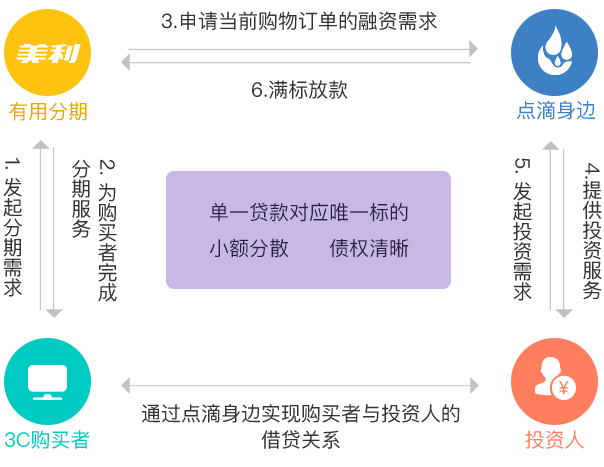

什么是有用分期
点滴身边携手美利金融（有用分期）正式建立消费金融合作，将全程服务于用户的场景消费借贷需求。美利金融全资子公司....展开
什么是有用分期
点滴身边携手美利金融（有用分期）正式建立消费金融合作，将全程服务于用户的场景消费借贷需求。美利金融全资子公司——有用分期承接的消费者3C电子产品购物贷项目，通过点滴身边互联网消费金融撮合交易平台，完成借贷融资，从而实现“消费借贷一对一”（单一产品购买者即借款人对应唯一点滴身边投资标的）的互联网网贷模式，真正做到小额分散、债权清晰，最终实现借款人的快速借贷、投资人的心中有数。 在项目安全性方面，有用分期向点滴身边平台发起的借款融资中，如发生购买者逾期还款时，美利分期将履行与点滴身边签署的逾期回购承诺协议，及时回购逾期借款标的，确保投资人的收益。收起

项目亮点
- 1
小额分散、债权清晰，实现借款人的快速借贷、投资人的心中有数。
- 2
逾期债权回购，投资安全靠谱。
- 3
优质债权，项目债权100%来自于美利金融旗下全资子公司有用分期中3C购买者消费场景借贷，借款用途清晰且借款额度低。
- 4
收益稳健更安心。
安全保障